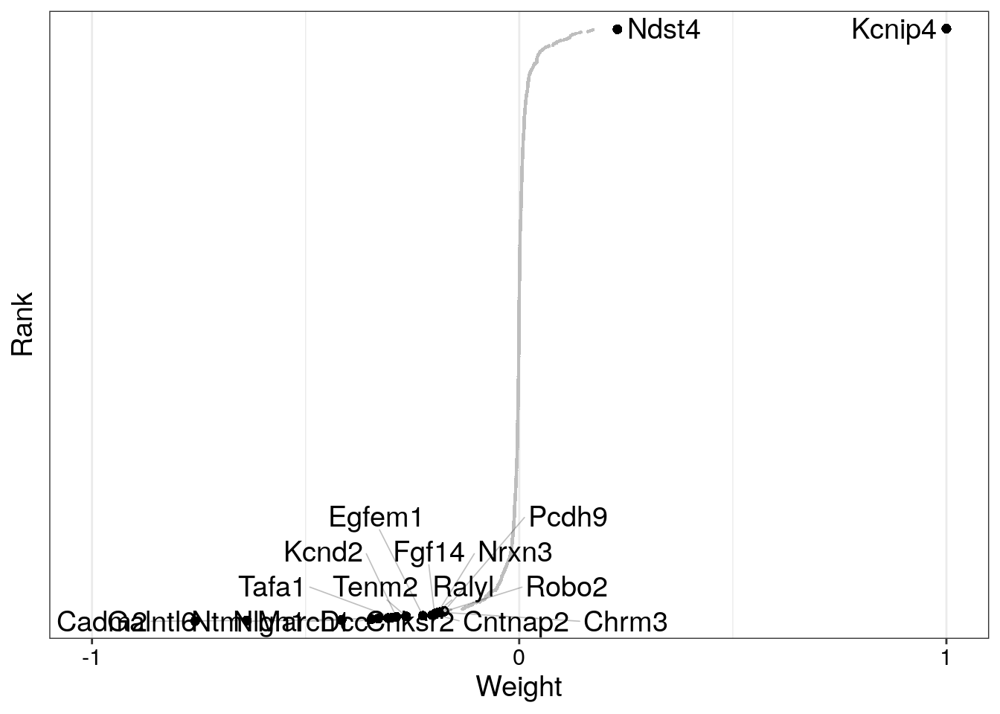
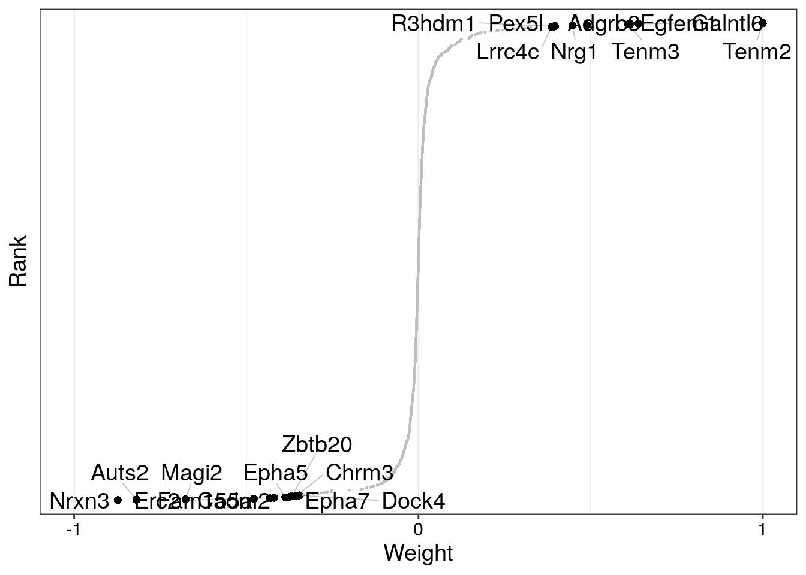
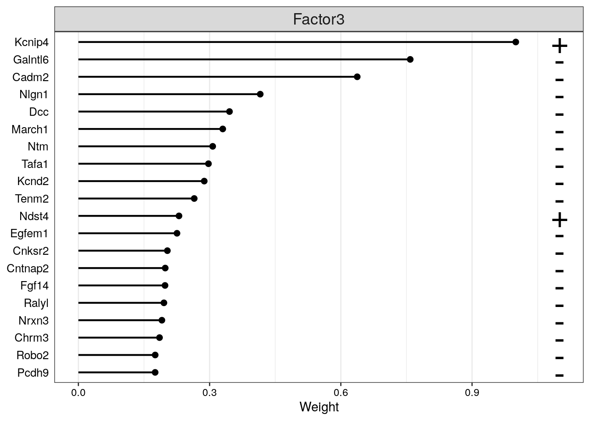
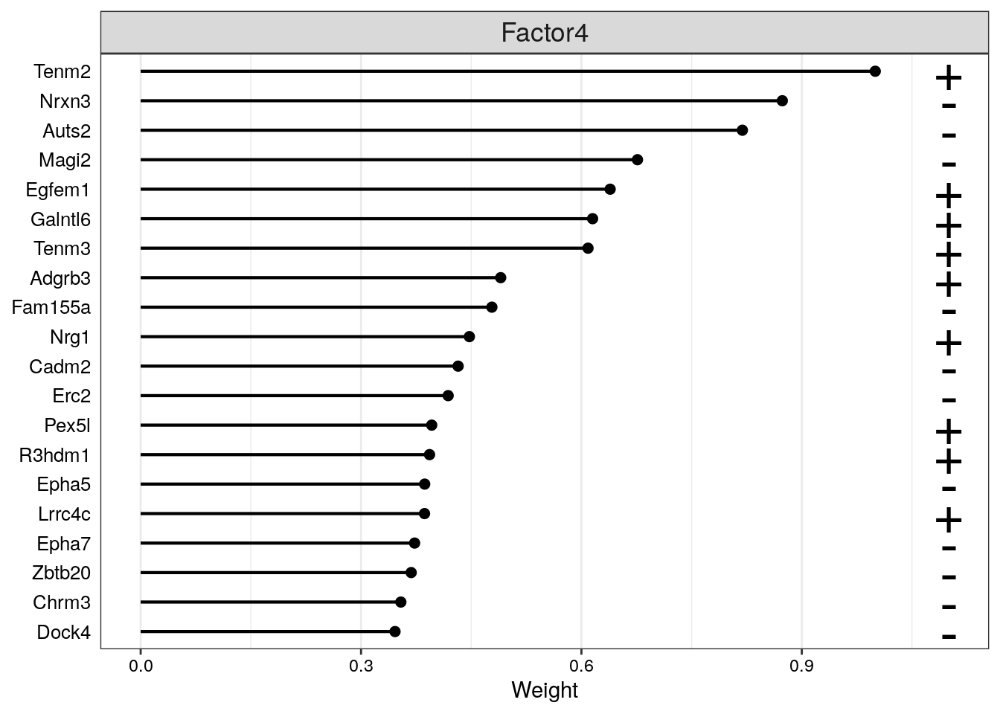

Preprocessing and Selection of Highly Variable Genes in CA1-do Cells
We load single-cell RNA-seq data and then we merge the selected wild-type samples into a single object and focus on cells labeled as “CA1-do”. We identify the top 1,000 highly variable genes and subset the data accordingly.
Preparing the MOFA Model from Single-Modality RNA Data
We construct a MultiAssayExperiment object from the RNA expression matrix and extract replicate and condition information from column names. This metadata is added to the sample annotations. We then create a MOFA object without specifying groups, configure the data, model, and training options—scaling both views and groups, and setting the number of factors to 10. Finally, we prepare the model and visualize a summary of the input data structure.
We train the MOFA model using the previously configured object and save the output to an HDF5 file. After training, we extract the sample metadata and merge it with the original cell annotations to ensure consistent labeling. The updated metadata is then assigned back to the trained model.
We plot the first ten latent factors inferred by the MOFA model, coloring the samples by condition. This allows us to assess whether any of the factors capture variability associated with the experimental conditions.
Code
model <-load_model("~/Downloads/multiome_data/data/model_RNA.hdf5")
Warning in .quality_control(object, verbose = verbose): Factor(s) 1 are strongly correlated with the total number of expressed features for at least one of your omics. Such factors appear when there are differences in the total 'levels' between your samples, *sometimes* because of poor normalisation in the preprocessing steps.
We focus on factors 3 and 4, which clearly distinguish between the conditions, confirming their relevance in capturing the underlying biological variability related to the experimental groups.
We examine the top 20 genes with the highest weighted contributions to factors 3 and 4. The weights are scaled between -1 and 1 to highlight genes that drive the variability captured by these factors, providing insight into the molecular features associated with condition differences.
Code
plot_weights(model,factor =c(3),nfeatures =20, # Number of features to highlightscale =TRUE, # Scale weights from -1 to 1abs =FALSE# Take the absolute value?)

Code
plot_weights(model,factor =c(4),nfeatures =20, # Number of features to highlightscale =TRUE, # Scale weights from -1 to 1abs =FALSE# Take the absolute value?)

Visualizing Top Gene Weights for Selected Factors
We display the top 20 genes contributing to factors 3 and 4 using scaled weights. This visualization helps identify key genes driving the differences between conditions captured by these latent factors.
Code
plot_top_weights(model,factors =c(3),nfeatures =20, # Number of features to highlightscale =TRUE, # Scale weights from -1 to 1abs =FALSE# Take the absolute value?)

Code
plot_top_weights(model,factors =c(4),nfeatures =20, # Number of features to highlightscale =TRUE, # Scale weights from -1 to 1abs =FALSE# Take the absolute value?)

Exporting Top Gene Weights for All Factors
Thanks to our util, we can iterate through factors 1 to 10, extracting the top 100 genes contributing to each factor. Then we can save the results as separate tab-delimited files for downstream analysis or reporting.
We compute a t-SNE embedding using the first five MOFA latent factors to capture the main sources of variability in a reduced dimensional space. The resulting coordinates are incorporated into a SingleCellExperiment object and plotted, coloring cells by condition to visualize clustering patterns and potential separation between groups.
Warning in .check_reddim_names(x, value[[v]], withDimnames = TRUE, vname = sprintf("value[[%s]]", : non-NULL 'rownames(value[[1]])' should be the same as 'colnames(x)' for
'reducedDims<-'. This will be an error in the next release of
Bioconductor.